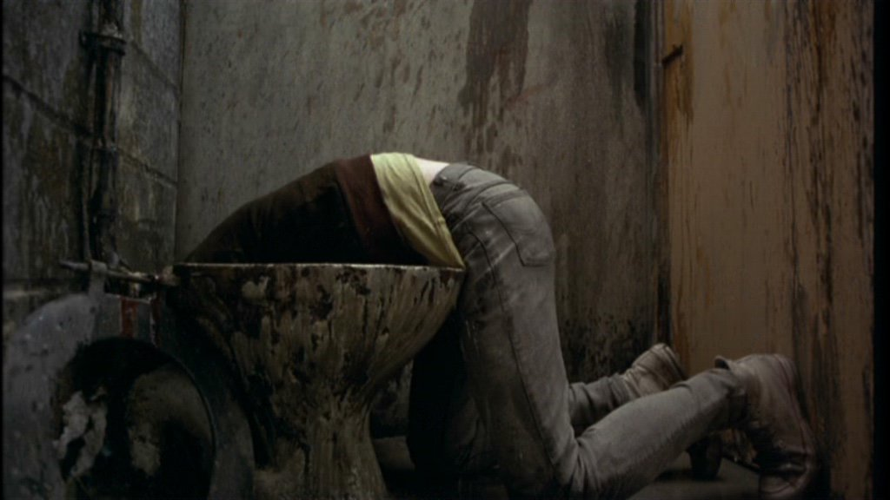

Hay una chica bonita
esnifando cocaína en un
cuarto de baño inmundo.
-¿Otra? Sí
-¿Otra? Sí
Se le duerme la boca y se le abren las piernas.
Blancas, delgadas, cubiertas de heridas.
Al rato aparece un pájaro afónico y desquiciado
desplumándose vivo sobre un colchón viejo.
Hay una chica bonita
Dejémosla estar